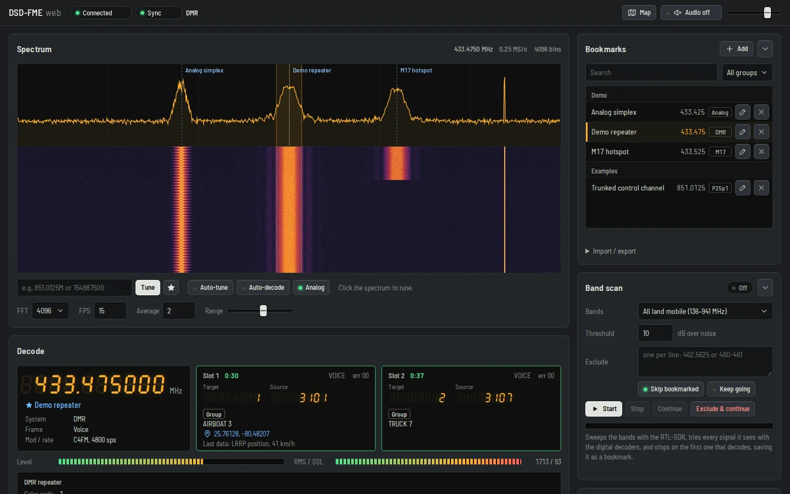
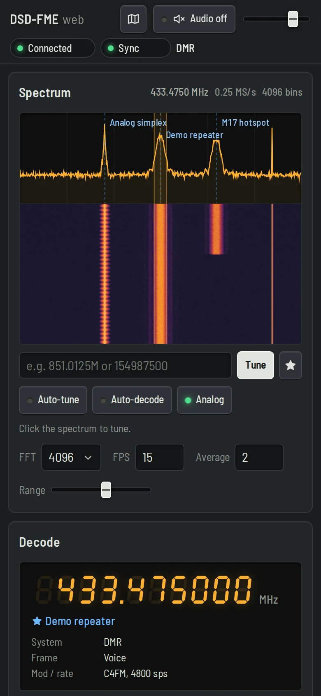

DSD-FME web
A digital voice decoder with a browser interface built in. Point it at an RTL-SDR, start it with --web, and get the spectrum, waterfall, calls, trunking and a radio map in any browser, phones included.
- DMR
- P25 Phase 1
- P25 Phase 2
- NXDN
- dPMR
- YSF
- D-STAR
- M17
- EDACS
- ProVoice
- X2-TDMA
- Analog FM
# then open http://localhost:8080/
dsd-fme -i rtl --web 8080

What it adds to DSD-FME
- A web server inside dsd-fme: the page is built into the binary, with an optional password. Nothing else to install.
- Spectrum and waterfall from the RTL-SDR: click to tune, auto-tune, auto-decode, and a band scan that saves what it finds as bookmarks.
- Activity log: calls, LRRP positions, ARS registrations, text messages, P25 packet data, and analog FM with its CTCSS tone, DCS code and DTMF ANI.
- Radios and map: every radio heard, positions on an OpenStreetMap map.
- Trunking: follows calls from a P25 control channel, with skip, hold and block per talkgroup.
- Audio and recordings: decoded audio in the browser and per-call WAV downloads.
- Other SDRs (HackRF, Airspy, SDRplay…) through SDR++, and RTL-SDR over
rtl_tcp. - Kept up to date: changes to the original DSD-FME are merged in regularly.
Without --web it is the regular DSD-FME.




Build and install
Developed and tested on Linux (Manjaro). Install the libraries; librtlsdr gives the RTL-SDR input and the spectrum, codec2 gives M17 voice.
# Arch, Manjaro sudo pacman -S --needed base-devel cmake git libsndfile libpulse ncurses rtl-sdr codec2 # Debian, Ubuntu, Raspberry Pi OS, Mint sudo apt install build-essential cmake git pkg-config libsndfile1-dev libpulse-dev \ libncurses-dev librtlsdr-dev rtl-sdr libcodec2-dev
Then mbelib, lwvmobile's fork (read its patent notice first), and this repository:
git clone https://github.com/lwvmobile/mbelib cd mbelib && git checkout ambe_tones cmake -B build && cmake --build build -j"$(nproc)" sudo cmake --install build && sudo ldconfig cd .. git clone https://github.com/altbert/dsd-fme-web cd dsd-fme-web cmake -B build && cmake --build build -j"$(nproc)" ./build/dsd-fme -i rtl --web 8080
Look for Found RTLSDR in the output of cmake -B build: without it there is no RTL input or spectrum. sudo cmake --install build installs it in /usr/local/bin. Fedora packages, build options and updating: BUILD.md.
Command-line options
The web server is off unless you pass --web. Each option also works as --option=value.
| Option | What it does |
|---|---|
--web [bind:]port | Starts the web server. --web alone listens on 127.0.0.1:8080, so only this computer can open it. --web 9000 changes the port. IPv6 goes in brackets: --web [::1]:8080. |
--web 0.0.0.0:8080 | Listens on every network interface, so phones and other computers on your LAN can open it. Set a password if you do this. |
--web-pass <pw> | Asks for a password before the page shows or controls anything. It also lets the page be opened under any host name (see Security). |
--web-bookmarks <file> | Where bookmarks are saved. The default is ~/.config/dsd-fme/web_bookmarks.json. |
--web-root <dir> | Serves the page from a folder on disk instead of the copy built into the binary (for working on the UI). |
DSD-FME options that go well with it
-i rtl:dev:freq:gain:ppm:bw:sq:vol | Starts the RTL-SDR with these settings: dongle number, frequency, gain (0 = the tuner's AGC), PPM, bandwidth in kHz, squelch and sample volume. Everything after rtl is optional, and the RF tab changes them while it runs. |
-o null | Keeps the sound off the computer's speakers; listen in the browser instead. |
-N | The DSD-FME terminal interface, at the same time as the web page. |
-T -C chan.csv -G group.csv | Trunking with a channel map and a talkgroup list from the start. Both lists can also be pasted in the Trunk tab. |
# DMR trunking on the LAN, with a password
dsd-fme -fs -i rtl:0:450M:0:-2:12 -T -C chan.csv -G group.csv \
--web 0.0.0.0:8080 --web-pass hunter2
Receivers
| Input | What the page can do |
|---|---|
-i rtl | Everything: an RTL-SDR dongle on this computer. |
-i rtltcp:host:port | An RTL-SDR on another machine running rtl_tcp. Not tested yet, and the sample rate, bandwidth and RTL AGC settings don't work over it. |
-i tcp -U 4532 | Any radio SDR++ supports (HackRF, Airspy, SDRplay, LimeSDR, Pluto…). In SDR++, send the audio to the Network sink (TCP, port 7355) and turn on the Rigctl Server (port 4532). Decoding and tuning work; there is no spectrum, waterfall or band scan. |
-i tcp / -i pulse | Audio from any radio or SDR program. Decoding works; you tune in the other program. |
The page, panel by panel
Top bar
Lamps for the connection to dsd-fme, sync and the decoder in use, plus Trunking and Band scan lamps while those run.
- Map opens the radio map.
- Audio plays the decoded voice and analog audio in the browser, with a volume slider. The speakers and WAV outputs keep working as before.
Spectrum and waterfall
Live view from the RTL-SDR. The shaded band is the channel the demodulator hears. Click anywhere to tune there.
- Type a frequency (
851.0125M,154987500) and press Tune. ★ bookmarks it. - Auto-tune moves onto the strongest nearby signal and keeps it centered.
- Auto-decode listens for every protocol's sync at once and switches the decoder to the one it hears, usually within a second.
- Analog (on at first) plays analog FM whenever there is no digital sync, in AUTO and Auto-decode. Set the squelch so noise stays muted.
- FFT, FPS, Average and Range set the detail, speed, smoothing and contrast.
Decode
The 7-segment readout shows the tuned frequency and bookmark name, the system, frame type and modulation. The meters show the demodulated signal level while in sync, and the RF level against the squelch.
One box per slot shows the call: talkgroup and source, group or private, how long it has lasted, talker alias, GPS position, encryption and the last data received.
The system box shows the site once a repeater or control channel identifies itself: P25 WACN/SYS/NAC/RFSS/site, DMR color code and system, NXDN RAN. On analog FM, the Tone row shows the CTCSS tone, DCS code and DTMF ANI.
Trunking
Shows up once a control channel is heard. It is built around P25: it shows the call being followed and a state badge (Watching, Following, Waiting, Returning, Searching). On DMR and NXDN trunked systems it shows up too, and Follow calls turns on DSD-FME's own trunking.
- Follow calls starts following; Stop stops and stays on the control channel.
- Skip call leaves the current call until it ends; Back now returns to the control channel without waiting out the hang time.
- Hold follows only this talkgroup until you release it; Block stops following it until DSD-FME closes.
- Group calls Private calls Data Encrypted pick which calls to follow. Data calls have nothing to hear, and encrypted ones stay muted without a key.
- In the talkgroup list, a lit key means followed: click it to change. Click a number to see its calls in Activity, or a name to edit it. Only lit follows the lit ones and nothing else.
Activity
A log of everything decoded: calls with their length, LRRP positions, ARS registrations, text messages, P25 packet data and analog FM calls with their tone.
- Show All Calls Data Signalling System or Decoder log (DSD-FME's event history), or type a radio, talkgroup or text to filter.
- Errors also lists packets that failed their CRC check.
- Clear empties the log and the decoder's event history.
Radios and map
Every radio heard: its ID and alias, when it was last heard, what it did, its talkgroup and position. Radios on air are green.
The map puts positions on OpenStreetMap, and radios on air pulse. Follow on air brings radios that start talking into view.
Bookmarks
Saved channels, each with a name, frequency, decoder, modulation and group. Click one to tune and switch decoder in one step. They are saved on the computer running dsd-fme.
- Add saves the tuned channel. Search matches name, group or MHz; the menu picks a group.
- Import / export: Export saves them as a file; Import… takes that file, an SDR++ frequency manager file, or CSV lines
freq,name,decoder,group.
Band scan
Sweeps whole bands with the RTL-SDR and tries every signal it sees. It stops on the first one that decodes and saves it as a bookmark. Toned analog FM is saved too, as analog.
- Bands: all land mobile (136–941 MHz), VHF, UHF, 470–512, 800, 900, ham 2 m + 70 cm, PMR446 or a custom range. Threshold is how far over the noise a signal has to be.
- Exclude lists frequencies or ranges it never stops on. Exclude & continue adds the current one and moves on.
- Skip bookmarked passes over channels you already have; Keep going bookmarks every find without stopping.
- Start Stop Continue control the sweep.
Settings tabs
Decoder
The decoder: AUTO (P25, DMR, YSF, D-STAR, X2-TDMA), TDMA trunk, P25 Phase 1 or 2, DMR, NXDN48 / IDAS, NXDN96, dPMR, YSF, D-STAR, M17, ProVoice, EDACS or Analog FM, and the modulation (C4FM, QPSK, GFSK).
- Invert for inverted signals; Slot 1 Slot 2 turn each TDMA slot's audio on or off.
- Digital gain (0 = automatic) and Analog gain; audio filters HPF-D (high-pass on digital voice), HPF LPF PBF.
- Payload prints frame payloads in dsd-fme's console; Monitor plays analog audio whenever there is no digital sync, in any decoder; Rec WAV records each call; Clear events empties the event history.
- P2 params: WACN, system and NAC for decoding P25 Phase 2 voice when no control channel has given them.
RF
- RTL-SDR: LNA gain, Tuner AGC (the tuner sets its own gain; the slider is off meanwhile), RTL AGC (digital gain that lifts noise too, so the squelch works poorly with it), PPM correction, sample Volume (×1–3), Bandwidth (4–24 kHz) and Sample rate (0.25–3.2 MSPS; above 2.4 most dongles drop samples).
- Squelch: Auto floor keeps it a margin (0 to +20 dB) over the noise floor of the whole spectrum, so it follows gain changes. Or type a Level and press Set, or press Channel floor to take the tuned channel's quiet level plus the margin. The squelch gates NXDN, dPMR and M17 sync, analog audio and the band scan.
- SetMod BW: the bandwidth sent over rigctl (SDR++).
Trunk
- Channel map: for DMR Tier III, Capacity Plus, NXDN and EDACS systems that send channel numbers instead of frequencies (P25 sends its own channel plan). Paste
channel,frequency in Hzlines and press Import channel map. - Talkgroup list: DSD-FME's group CSV, where mode A follows and B blocks. Import groups applies it; Current list fills the box with the names and choices made in the Trunking card, to copy and keep.
- Scan list: the conventional Scanner steps through these frequencies and stops on each one with a signal. Fill it by hand or From bookmarks; Next jumps ahead. It doesn't run together with trunking.
Keys
- Keys for DMR Basic Privacy, NXDN/dPMR scramblers, RC4, DES, AES-128/256, Hytera and vendor modes (TYT, Retevis, Baofeng, Anytone, Kenwood, Connect Systems, Vertex, Auctus, straight XOR, Hytera RAS, Hytera OTA signalling), or a hex or decimal key-list CSV.
- Force key uses the key even when the call's encryption identifiers say otherwise; Clear all keys removes them.
- Auto-find BP key finds a DMR Basic Privacy key (1–255) from encrypted voice: in speech pauses radios send a fixed silence frame, which gives the key away. Let it run over some encrypted BP voice. Strong ciphers (AES, DES, RC4) can't be found this way.
Keys apply to the running decoder. Decode only traffic you are allowed to.
Files
Per-call WAV records each call; the recordings are listed here for download. Refresh list picks up new ones.
Log
What the web side did: tuning, decoder changes, trunking and band scan steps, and errors. DSD-FME's own event history is under Activity → Decoder log.
Security
- The server listens only on this computer unless you give another address.
- On a network, anyone who can open the page controls the decoder and can download the recordings. Use
--web-pass, and a reverse proxy with TLS if it can be reached from outside your LAN. - Without a password, the page only opens by IP address,
localhostor this computer's own name (also with.local). Under a domain name, behind a reverse proxy for example, it needs--web-pass. This stops websites from reaching it through DNS tricks. - Connections from other websites are refused, and downloads are limited to the recordings folder.
Troubleshooting
--webisn't recognized- An older DSD-FME runs instead, often an upstream one in /usr/local/bin.
which -a dsd-fmelists them; run./build/dsd-fmeor install this build. - No spectrum, or
RTL Support not enabled/compiled - librtlsdr wasn't found when cmake ran. Install its development package and run
cmake -B buildagain. With-i tcpor-i pulsethere is no spectrum at all. usb_claim_interface error -6- Another program has the dongle (another dsd-fme, rtl_tcp, SDR++…), or the DVB-T TV driver took it: replug it, or
sudo modprobe -r dvb_usb_rtl28xxu. 403 Unknown host name- The page was opened under a name it doesn't know. Use the IP address or
localhost, or start with--web-pass. libmbe.so.1not found- Run
sudo ldconfigafter installing mbelib.